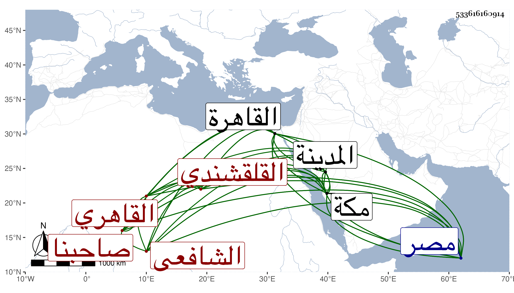

0902Sakhawi.DawLamic.ITO20230111-ara1.EIS1600.533616160914
Biography ID: 533616160914
148
عبد الرحمن بن أحمد بن إسماعيل بن محمد بن إسماعيل بن علي صاحبنا التقي أبو الفضل بن القطب القلقشندي الأصل القاهري الشافعي الماضي أبوه مع أخوين له والآتي أعلم اخوته العلاء علي ويعرف بالتقي القلقشندي . ولد في ليلة سادس رجب سنة سبع عشرة وثمانمائة بالقاهرة ونشأ بها تحت كنف أبيه فحفظ القرآن والمنهاج الفرعي وألفية الحديث والنحو وغيرها وعرض على جماعة كالعلاء البخاري والشمس البرماوي ظنا فقد رأيته وصفهما بشيخنا ، بل كتب بخطه انه قرأ القرآن تجويدا على الزراتيتي فالله أعلم بكل هذا واشتغل في الفقه وأصله والعربية يسيرا وجل أخذه فيها مع ذلك عن أخيه ، وممن أخذ عنه دروسا ذات عدد في العربية الزين عبادة والقاياتي وفي الفقه حسبما كان يخبر الشرف السبكي والعلم البلقيني ورأيت سماعه في أكثر المجلد الأول من السنن للبيهقي على الزين القمني وكذا في مجالس من دلائل النبوة له من لفظ الكلوتاتي وطلب هذا الشأن بنفسه فسمع كما كان يخبر على الشهاب الواسطي المسلسل وكذا سمعه بشرطه على الجمال عبد الله الهيثمي وحصل بقراءته الكتب الستة ومسند أحمد وصحيح ابن حبان وغيرها من الكتب الكبار والاجزاء القصار ولكنه فوت أشياء كثيرة كانت جديرة بالاهتمام ، ومن شيوخه في الرواية والده وأخوه والمحب ابن نصر الله البغدادي الحنبلي والمقريزي وابن خطيب الناصرية والزين الزركشي والشرابيشي وناصر الدين الفاقوسي والشمس البالسي والجمال بن جماعة وأخته سارة والشرف الواحي وابن الفرات وعائشة الكنانية وقريبتها فاطمة ، وأجاز له في جملة بني أبيه بل وفي غيرهم الشمس بن المصري والبرهان الحلبي والقبابي والتدمري وعائشة ابنة ابن الشرائحي وابن ناصر الدين وآخرون من الأعيان ، وحمل عن شيخنا بقراءته وقراءة غيره من تصانيفه وغيرها جملة ومما قرأه عليه من تصانيفه اللسان وتحرير المشتبه والمقدمة وتلخيص مسند الفردوس ومناقب الشافعي وشرح النخبة وكان يذكر أنه أخذ عنه من بعد الثلاثين ، ومع ذلك فكانت معرفته بهذا الفن الذي لم يذكر بسواه ضعيفة جدا ولكنه لما خرج شيخنا الزين رضوان المستملي لنفسه ثم لولده المتباينات زاحمه في ذلك لا سيما في التي لولده لمشاركته إياه في أكثر أحاديثها وخرج المتباينات ولم يزد على الأربعين غير حديث واحد وفيها أوهام وبعض تكرير كنت شرعت في بيانه ثم أمسكت على أنه توسل بالأمير الفاضل تغري برمش الفقيه وكان قد اختص بصحبته ومزيد التردد إليه بحيث كان هو القارىء عنده في منزله بقلعة الجبل على المشايخ المستدعي بهم من البلاد الشامية وهم العلاء بن بردس والشهاب بن ناظر الصاحبة والزين بن الطحان عند شيخنا حتى كتب له عليها ما نصه : كتاب الأربعين المتباينة بشرط اتصال السماع تخريج المحدث الفاضل المفنن الكامل الأوحد في الفضائل المستوجبة للفواضل الحافظ البارع تقي الدين كثر الله فوائده وما أثنى على التخريج أصلا ، وكذا وصفه قريبا من تاريخ هذه الكتابة على نسخته بمناقب الشافعي بعد قراءته لها في يوم واحد عند رأس الامام رحمه الله بالأصيل المحدث الفاضل البارع الكامل النبيل الأوحد الحافظ ، وبعد ذلك على نسخته بشرح النخبة وقد قرأها عليه في مجالس ذات عدد شبه الرواية بالمحدث الفاضل الأوحد البارع جمال المدرسين مفيد الطالبين الحافظ وقال انها قراءة حررها وأجاد وقرأها فأفاد كما استفاد قال وقد أذنت له أن يرويها عني ويفيدها لمن التمس منه رواية تسميعها كما سمعها مني ولمن أراد منه تقريب معانيها ممن يعانيها يوضحها حتى يدري من لم يطلع على مرادي ما الذي أعني والله المسئول أن يجمع له الخيرات زمرا ويسلمه سفرا وحضرا ولم يتيسر له مع اعتنائه بالطلب الرحلة بلى قد حج في سنة خمس وثلاثين وما أظنه سمع حينئذ هناك شيئا ثم حج بعد في سنة سبع وخمسين فسمع بمكة على أبي الفتح المراعي وغيره وبمنى علي الشهاب الشوايطي وبالمدينة النبوية على قاضيها المالكي البدر عبد الله ابن فرحون وأبي الفرج المراغي أخي المتقدم وحج بعد ذلك أيضا في سنة ثلاث وستين فما أظنه أخذ عن أحد وأخذ بخانقاه سرياقوس عن محمود الهندي وبانبابة عن الشهاب العقبي وغيره وبالآثار عن الشهاب الشطنوفي وكذا بمصر القديمة والمناوات والتاج ونحو ذلك ، وأول ما وليه من الوظائف المباشرة بالمودع وبجامع طولون عقب موت أبيه ثم تدريس الفقه بالمنكوتمرية عقب شيخنا ابن خضر وقفز بعد وفاة شيخنا بأسبوع فتصدر للاملاء بجامع الأزهر غير متقيد بكتاب ولا غيره ومع سهولة ما سلكه على آحاد طلبة الحديث كثرت أوهامه فيه بحيث أفردتها في جزء ولكنه بلغ بذلك عند من لا يحسن كثيرا من المقاصد فانه لم يلبث أن مات شيخنا البدر العيني فترقى بعده دفعة واحدة بعناية صاحبه الصفي جوهر الحبشي الساقي حتى استقر عوضه في تدريس الحديث بالمؤيدية ، وكان الظاهر توهم عند السعي له أنه العلاء أخوه المعروف عنده بالعلم وغيره كما سمعته من لفظ العلاء فبادر إلى الاجابة فلما صعد ليلبس جنده بذلك كاد أن يتزحزح فعورض ثم استقر في النصف من تدريس الحديث بجامع طولون برغبة أخيه له في مرض موته عنه وعن تدريس الفقه بالشيخونية شركة بينه وبين ابنه الجمال إبراهيم فما سمح ابن الهمام بامضاء الشيخونية لهذا مع توسله عنده بجوهر المذكور وغيره واحتج بعدم التأهل ورام المناوي وهو قاضي الشافعية اذ ذاك التوقف أيضا في جامع طولون فاستغاث العلاء وطلب الطلوع وهو محمول إلى الظاهر فبادر القاضي وكتب وحاول اخراجها عنه بعد موته محتجا بأن شرط الواقف أن يكون المدرس ذا رحلة فما نهض ثم ولي مشيخة التربة الطويلية بالصحراء انتزعها من زين العابدين بن المناوي بعد انفصال والده عن القضاء متمسكا بسبق ولايته لها من شيخنا عوضا عن العرياني وفوض العلم البلقيني إلى المحب بن يعقوب القضاء لكونه زعم أنه شهد بذلك على شيخنا ولم يكن معه غيره حتى تم الأمر ، هذا مع سبق منازعة بينهما فيها عند القاضي الحنفي سعد الدين بن الديري وعدم ... نهضة التقى لشيء حتى ولا تحرير الدعوى وقال له زين العابدين انك لا تعرف علما والتزم أن لا يخرج معي من عهدة ما تزعم معرفته ، ثم مشيخة الفقه بالشيخونية عقب السراج الوروري متمسكا بولاية سابقة له فيها من بعض النظار هذا مع كون ما تمسك به يقتضي اشتراك ابن أخيه معه فيه ، ثم مشيخة الخانقاه سعيد السعداء عقب الزين خالد المنوفي ببذل أربعمائة فأقل فيما قيل ، وناب عن ابن النواجي في درسي الحديث بالجمالية والحسنية إلى غير ذلك من مرتب في جوالي مصر وغيرها مع مرتبات في أوقاف الصدقات واطلاب وتصوفات وغيرها وقد حدث ودرس قليلا وربما أفتى ، وكان انسانا متجملا في ملبسه وهيئته وضئ الهيئة سريع الدرج في القراءة غير قائم الاعراب في كلها رافقته في الأخذ عن شيخنا وغيره وسمع بقراءتي على غير واحد واستفاد مني أشياء لفظا ومراسلة وكتبت عنه قوله :
| ورب فتاة أخجل الغصن قدها | سبت قلب صب والمحبة قاطنه |
| وتفزع بخلا حين نشدو بوصلها | فواعجبا من خوفها وهي آمنه |
وقد تلاعب به الشعراء في بيتين عملهما بما لم أطل بايراده مع سائر ترجمته تخفيفا . مات وأنا بمكة في ليلة الثلاثاء ثالث شعبان سنة إحدى وسبعين بمنزله الذي اشتراه بخان الخليلي من القاهرة وصلى عليه من الغد بجامع الأزهر ودفن بالقرب من قبر أخيه رحمهما الله وإيانا ، ومما قدح فيه البقاعي به أنه وجد بخطه نسبتهم إلى قريش ولم يدع ذلك أبوه ولا أخوه ولا أحد ممن رأينا منهم ، قال ثم رأيت ذلك بخط أخيه قال وله نظم يتكلفه لا بقريحة مجيبة بل باستعمال العروض ، قال ومما جربته عليه مما يقدح ويؤثر في الجرح أنه حال القراءة إذا مر بكلمة تعسرت عليه قراءتها تركها وقرأ ما بعدها ، ثم أورد شيئا مما وقع له من ذلك وهجاه بعد موته .
